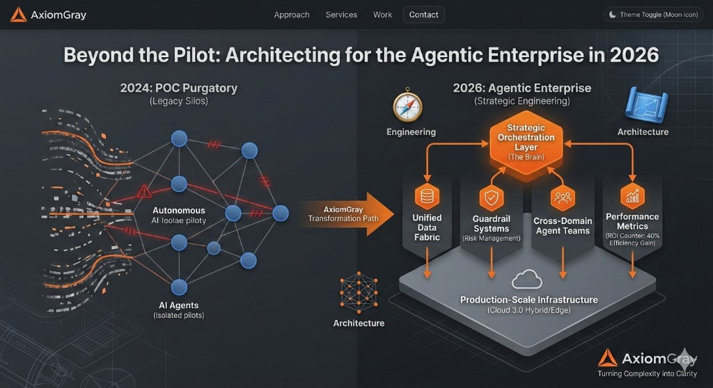

Governance
Architect
5 min read
The Salesforce Governance Gap: Why Your 'Flow-First' Strategy is Creating Future Debt
When everyone can build, eventually no one can deploy. How mature organizations break the cycle of technical debt in Salesforce.
Read article →
AI Architecture
7 min read
Beyond the Pilot: Architecting for the "Agentic" Enterprise in 2026
Most enterprises are stuck in POC Purgatory. Success in 2026 isn't about the model—it's the orchestration layer you build around it.
Read article →
Cloud Architecture
8 min read
Cloud 3.0: Why Your Data Infrastructure Isn't Ready for Production-Scale AI
Egress costs and latency are killing AI scaling. The answer is a fundamentally different architecture—compute closer to data, with sovereign execution.
Read article →